Fractal Landscapes in PostScript
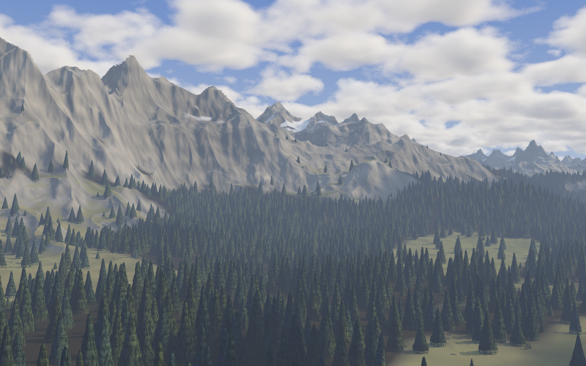
gallery/alpine_forest.ps), 1280×800. Every pixel is one PostScript procedure call: march a ray through the terrain and the trees, shade what it hits, haze it, march the same ray through a cloud layer, tone-map. 25.5 minutes on four cores.1. The idea
PostScript is a programming language for printers: a stack machine with dictionaries, loops, real arithmetic and an image operator. It has no 3D graphics, no shaders and no local variables, and it runs on one core. But colorimage can take a procedure as its data source and call it for every row of pixels. That makes it a ray tracer's frame buffer: compute each pixel's colour however you like, hand the row back, and the interpreter writes it to the page.
Everything here is computed that way, by pscat, an open-source PostScript interpreter, at its released version. There are no polygons. Mountains, clouds and trees are all functions: give one a point and it says how high the ground is there, how dense the cloud, how tall the crown. A ray from the camera through each pixel is marched: stepped along until it hits something, with each step's length chosen so it can't jump over a surface.
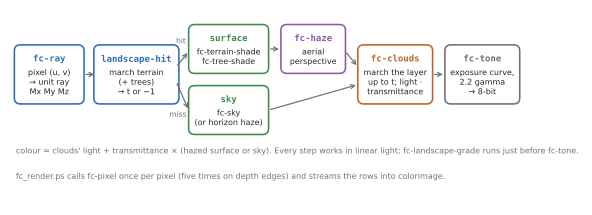
fc-landscape-pixel in lib/fc_landscape.ps). The cloud march runs last because it needs to know how far the ray travelled before hitting the ground: clouds behind a mountain must not show.The code lives in a handful of libraries, each a plain PostScript file:
| File | What it holds |
|---|---|
lib/fc_noise2.ps, lib/fc_noise3.ps | 2D and 3D noise: value noise, gradient noise, ridged and "eroded" fractal sums |
lib/fc_sky.ps | camera, sun, sky colour, aerial perspective, the tone curve |
lib/fc_clouds.ps | a ray-marched cumulus layer |
lib/fc_terrain.ps | the mountains: height function, ray march, materials, light and shadow |
lib/fc_erode.ps | water droplets that carve the terrain, baked into a map before rendering |
lib/fc_trees.ps | where trees grow, the crowns, the forest march and its shading |
lib/fc_render.ps | the per-pixel loop, antialiasing, cropping |
lib/fc_landscape.ps | loads all of the above in order and supplies a general fc-pixel with hooks |
All lighting is done in linear light: palette colours are written in ordinary sRGB, raised to the power 2.2 on load (fc-colour), added and multiplied as physical quantities, and only turned back into display values at the very end. Distances are in world units of roughly ten metres; the tallest peaks are 52 units above a valley floor at −6.
2. Camera and rays
The camera is a pinhole at (0, CamY, 0) looking along +z, with y up. A pixel's position across the frame is u from −1 to 1, and v on the same scale up the frame. fc-ray turns (u·tan(HFov/2), v·tan(HFov/2), 1) into a direction, tilts it up by Pitch, turns it right by Yaw and normalises it, leaving the three components on the stack. The pixel procedure stores them in three global names, Mx My Mz, which every later stage reads. PostScript has no locals, so this is how the pieces talk to one another.
One number from the camera matters everywhere: PixAng, the angle one pixel covers, 2·tan(HFov/2) / image width. Multiplied by a distance t, it gives the size of a pixel's footprint out there. That footprint decides how much detail is worth computing (section 5).
The world doesn't move with the camera: TerrOX and TerrOZ slide the terrain under it instead. Alpine forest uses the same mountains as Mountains, shifted by (180, 400) so the camera stands at the edge of a valley floor.
3. Noise
Natural shapes look random but not white-noise random: they're smooth at every scale, with large features carrying smaller ones. The standard building block is lattice noise (Perlin, 1985): put random numbers on the points of a grid and interpolate smoothly between them. Two kinds are used here.
- Value noise stores a random value at each lattice point and blends the four (or eight, in 3D) corner values with the smoothstep curve
3s² − 2s³.fc-noise2andfc-noise3are value noise. It's cheap, but its features are blobs sitting on the grid. - Gradient noise (Perlin's original "noise") stores a random slope at each lattice point and is zero at every lattice point.
fc-gnoise2is gradient noise. Its zero crossings form a connected network of lines, which turns out to matter a great deal.
Both are built for speed in an interpreter. The 2D lattice is 64×64 stored as 65×65, with the last row and column copied from the first, so a cell's four corners are fixed offsets from one array index and nothing wraps in the inner loop. The 3D lattice works the same way at 33³. Measured on pscat: one fc-noise3 call costs 1.8 µs; four octaves of 3D fBm, 8.5 µs.
Fractal sums
fBm (fractional Brownian motion) adds octaves of noise, each at twice the frequency and half the amplitude of the last, so detail appears at every scale. In the 2D terrain sums (fc-ridged, fc-eroded) every octave is also rotated by about 37° and offset (x' = 1.6x − 1.2y + 3.1, y' = 1.2x + 1.6y + 7.7: twice the frequency and a rotation). Without that, the lattice axes of all the octaves line up and the eye finds the grid. (The 3D cloud fBm, fc-fbm3, only scales each octave by 2.03 and offsets it.)
A ridged multifractal (Musgrave, in Texturing & Modeling) turns noise into mountain ridges. Each octave is folded, r = (1 − 1.6·|n|)², so every zero crossing of the noise becomes a sharp crest. Each octave is then weighted by the previous octave's value (w = min(2r, 1)), so fine detail piles up on the ridges and the valleys between them stay smooth, as real erosion leaves them. That's fc-ridged.
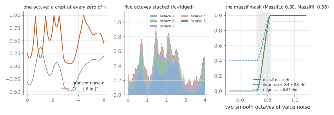
fc-ridged stacked, the coarse ones carrying the fine. Right: the massif mask (section 4). Computed by docs/techniques/make_figures.py from the same formulas (with its own random tables).What went wrong: the first ridged noise was built on value noise. Its zero crossings aren't a network; they're closed contours around blobs, so every ridge became a ring, and the range looked like a field of craters. Switching the ridges to gradient noise fixed it at once.
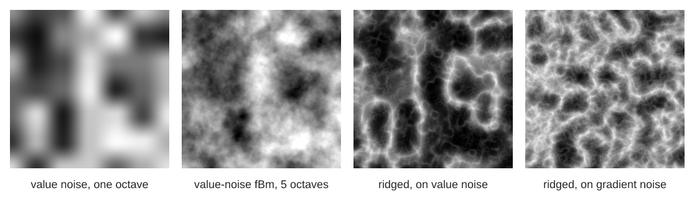
docs/techniques/noise_maps.ps. The third is fc-ridged's recipe on value noise: rings. The fourth is fc-ridged itself: connected ridge lines.Eroded fBm
fc-eroded is fBm whose octaves are damped where the ground is already steep: each octave is divided by 1 + |g|², where g is the slope accumulated from the octaves before it. Steep slopes stay smooth, as if runoff had cleaned them, and detail gathers on flats and crests. Computing the slope needs the noise's derivative, which value noise gives analytically: fc-noise2d returns the value and both partial derivatives in one call. Both ideas are Inigo Quilez's (his articles on value noise derivatives and fBm).
4. The shape of the mountains
One fractal everywhere gives an even, monotonous texture: mountains of the same height in all directions. Real ranges have structure at the largest scale too, with massifs and broad valleys. So fc-height-proc (in lib/fc_terrain.ps) builds the height as a hierarchy, in units of the main ridge wavelength (TerrScale 0.011, so about 90 world units):
- Domain warp. Before anything is evaluated, the point is pushed around by two smooth value noises at half the ridge frequency, by up to ±0.45 wavelength (
WarpAmp). Ridges then wander instead of running straight (Quilez, domain warping). - Massif mask. Two very low octaves of value noise (wavelength 1/
MassifScale= 4.5 ridge wavelengths), pushed through a smoothstep betweenMassifLo0.30 andMassifHi0.56. The result,Hm, is near 0 in broad valleys and near 1 over the ranges. - Ridges.
fc-ridged, capped at five octaves so peaks don't sprout needles, raised to the power 1.15 to sharpen the crests. - Gullies and texture.
fc-erodedat 2.6× the ridge frequency on the remaining octaves, scaled byDetailAmp0.16.
Valleys keep 40% of the small detail, so they aren't glassy, but almost none of the ridges.
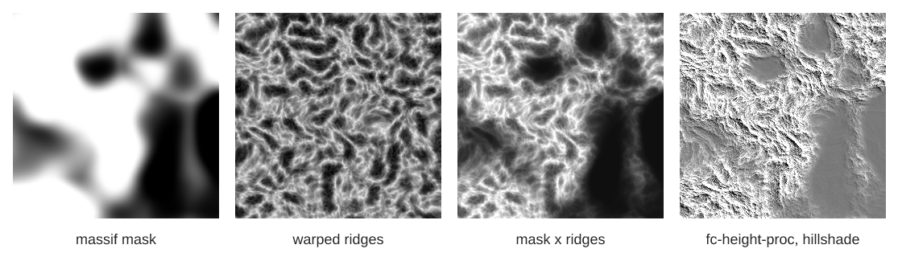
docs/techniques/terrain_layers.ps): the mask, the ridges, their product, and the finished fc-height-proc as a hillshade. The smooth patches on the right are valley floors.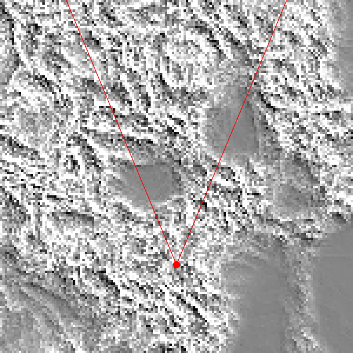
spikes/heightmap.ps: the terrain from above, with the camera of Mountains (red) and its field of view. A map like this found out why an early render showed no mountains at all: the camera was looking across lowland.Terrain from a map
The massif mask is the one layer a person can reasonably draw, so it is where a piece can take over. With MapOn, lib/fc_map.ps defines a hook, fc-terrain-base (map point → lift, mask, pin), and fc-height-proc calls it in place of the two noise octaves. The ridges, gullies and erosion stay fractal, so the map only has to say where the mountains, valleys and lakes are. World coordinates stay fixed and only the camera moves (TerrOX, TerrOZ, Yaw), so several views share one geography.
The map is a coarse painted grid (rows of characters or numbers, Catmull-Rom interpolated) and a feature list: peaks and ridgelines raise the mask in smooth bumps around a point or a polyline, aimed at a height; valleys carve it to 0 and lower the ground along a polyline; lakes are polygons whose inside is flattened to a bed below a water level. Peaks and ridges combine by taking the larger mask, then valleys and lakes cut into the result, so the order of the list doesn't matter. All of it is sampled once into a 128² table of (lift, mask, pin), so a height sample costs one 4×4 table lookup (about a third more than the noise mask: 57 µs against 43 µs per fc-height-proc call).
A mask only says where ridged noise grows; on its own it would put a peak wherever a warped ridge happens to cross the bump. So the third value, the pin, rises to 1 near every feature, and the domain warp fades by it (MapPin): there, the ridges keep to the noise's own unwarped network, and the summit lands where the bump is highest. Measured with spikes/map_pins.ps on four seeds, peaks land 10–32 units from where they were put (the ridge wavelength is about 90) and within about 15% of the asked height. Away from features, MapNoise lets some of the noise massif back in, as low hills. The painted grid doesn't pin: its mountains keep the usual warp and land only roughly where painted.
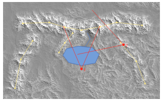
gallery/charted_range.ps) from above, -D Plan=true (fc-map-plan): the procedural terrain as a hillshade with the map's features drawn over it, ridges and peaks yellow, the river blue, water shaded wherever the ground lies below the lake's level (the dashed line is the polygon as drawn), and the two viewpoints in red.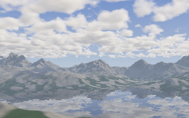
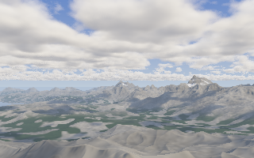
-D View=2, 4.9 min), from the eastern hills looking west across the valley. Same map, same seed; only the camera moved.Erosion is still baked per view, over what that camera sees, so the two views agree on every ridge and valley the map and the noise make but not on the finest drainage channels. Sharing one bake over the whole map is #18.
The coast
A map can also have a sea (MapSea, #39). Low land needs painting without mountains, so a second grid, MapLiftGrid, paints the ground height itself (the mask grid only says where ridges grow), and two island presets join the features: a /volcano is a cone of lift with concave flanks, a little crater and a light ridged mask for gullies; an /atoll is a ring of low lift round a lagoon. Any of these raises TerrTop, the ceiling where the march gives up, over the tallest lift; older maps keep theirs, so their pixels don't change.
The bake then measures, for every texel of the table, its signed distance to the coastline. A texel is land when its noise-free height (base floor, lift, and the relief its mask grows on an average ridge) stands above the sea. Between a land texel and a sea texel the waterline is put where that height crosses sea level, and a two-pass chamfer carries the distance across each side. Each sea texel also keeps the height of the land nearest it, which is how a point offshore knows whether it lies under a cliff or off a beach. Near a /cliff polyline the test asks for land that much above the sea, so the coast is cut back into high ground and leaves a cliff of about that height. The bake is pure geometry: it runs before the noise is seeded, so the per-point wobble is added later.
Per point, fc-height-proc hands its height to fc-coast. It reads the distance (Catmull-Rom), adds two octaves of noise so the line wanders into coves and points (and, on cliffed shores near the camera, a fine octave that roughens the faces), and reshapes the ground:
The two shore curves meet with the same slope at the waterline. High land is cut back by the cliff face and keeps its height above it. Low ground within CoastFlat of the shore curve is pressed flat onto it, within CoastBeachW of the water, so gentle land becomes a sloping beach of sand or cobble with a berm, and nothing inland dips under the sea. At a cliff's foot a wave-cut bench sits just under the water. A heightfield can't overhang, so the bench stands in for the notch and there are no arches. Offshore, the sea floor follows the distance, deepening to CoastDepth, so the water's colour can follow it. Thresholded noise raises stacks off cliffed shores (as tall as a fraction of the nearby cliff) and rocks in the surf, and the map's /stack features add placed ones. They are evaluated per point because they are narrower than a texel. CoastReef adds a patchy reef off low shores. The beach material (sand, mottled cobble in patches) chains onto the terrain's material hook. Erosion's droplets stop at the sea.
The cost is a second 4×4 lookup and two or three noise samples per height sample near the coast: 82 µs per fc-height call in spikes/coast.ps, against 57 µs for the map alone. Far inland, high above the shore, the point returns after the lookup and the wobble.
5. Detail follows distance
A mountain 800 units away still has eight octaves of noise in its formula, but most of them are smaller than a pixel there. Computing them wastes time, and worse, sampling detail finer than a pixel at one point per pixel is aliasing: it shows up as sparkle and grain near the horizon. So every fractal here stops at the octave whose features are about two pixels across at that distance.
The terrain's count is a real number: the last, fractional octave is faded in by its fraction, so detail doesn't pop as the distance changes. Surface normals are measured the same way, by differencing over two pixel footprints (Ke = max(2·t·PixAng, 0.08)), not a fixed tiny step. And a bigger image automatically gets more detail at every distance, because PixAng shrinks.
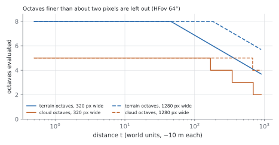
6. Marching the heightfield
A heightfield can't be intersected with a ray in closed form, so the ray is stepped forward and the ground height checked at each point (Quilez, terrain raymarching). The art is in the step length. Too long and the ray tunnels through a ridge; too short and the render takes all night.
The basic march, fc-terrain-hit, steps by a fraction of the clearance, the height of the ray above the ground directly below it: step = max(0.42·d, 0.2 + 0.004·t). If the ground can't be steeper than a certain slope, a fraction of the clearance can't overshoot. The floor keeps distant rays from crawling. When a sample lands below ground, the last two samples bracket the surface, and five bisections home in on it.
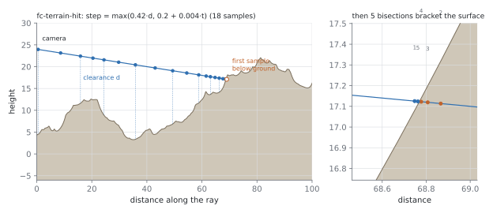
fc-terrain-hit's.A smarter bound: the slope map
The fixed factor 0.42 assumes the worst slope everywhere. Counting calls showed what that cost: in the forest view, 86 of the 92 fc-height calls per pixel were in the march, mostly rays skimming low over gentle valley floors. So fc-forest-hit uses a Lipschitz bound instead, the same reasoning as Hart's sphere tracing (1996). If the ground rises at most L per unit of horizontal distance, and the ray's horizontal speed is hor and its fall is −My, ray and ground can close at most L·hor + max(0, −My) per unit of travel. So it is safe to step
with L read from a slope map baked alongside the forest (the steepest slope within a texel of each texel, times 1.25, plus 0.6 for the octaves the map doesn't hold). On gentle ground that's a much longer step. It cut the above-tree steps by 30–50%.
7. Hydraulic erosion
Noise makes convincing ridges but not drainage: real mountains are carved by water into branching gullies with fans of sediment where they flatten out. No closed-form noise does that, so it's simulated before rendering, with the particle method described by Hans Beyer (2015) and popularised by Sebastian Lague's Hydraulic-Erosion.
fc-erode-bake samples the terrain (five octaves) on a grid, ErN² texels covering an ErSize 1150-unit square centred ErDist 430 units ahead of the camera. Then it drops ErDrops water droplets at random. Each droplet, for up to 48 steps:
- moves one texel downhill, keeping a little of its old direction (inertia 0.06);
- can carry sediment in proportion to its speed, water and the drop it just made (capacity 0.6);
- below capacity, digs (rate 0.35), but never deeper than the drop it just made, so it can't dig holes;
- above capacity, or going uphill, deposits (rate 0.04), filling the pit it climbed out of first;
- speeds up going down (gravity 4), and evaporates 1.5% per step.
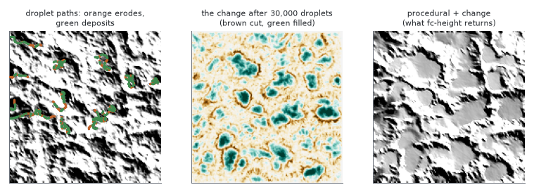
make_figures.py), on a small 160² ridged map. The change map shows channels cut into slopes and pits filled.What went wrong: replacing the terrain with the eroded map lost all its crispness. A bilinear lookup showed every texel as a flat facet; a smoother B-spline rounded every ridge off. The fix was to keep only the change erosion made (ErDelta, the default) and add it to the full procedural terrain, which keeps its eight octaves of detail and gains drainage on top. The change is read with a Catmull–Rom cubic over 4×4 texels (it passes through the texel values and has a continuous slope, so normals don't facet), and its weight fades to zero over the map's outer 6% so there's no seam.
Thermal erosion and talus
Water carves; gravity sheds. Rock that is steeper than loose material can rest on weathers, and the debris slides down until it lies at its angle of repose, about 33°, building the straight scree aprons under every cliff. The classic thermal rule (Musgrave, Kolb and Mace 1989) moves, wherever a texel stands more than the talus height tan(ErTalus) · texel above a 4-way neighbour, part of the excess to the lower neighbours in proportion to their drops. Applied to the whole map it is a slow blur: in these ranges about 40% of texels are steeper than 33°, and a score of passes rounds every ridge to repose.
So the bake keeps two layers. Each pass first weathers a small share (ErWeather) of the excess from rock into scree in place, a loose depth per texel, and then moves only scree, up to ErThermalRate of half the excess. Rock faces stay steep and feed debris slowly; the debris runs down the face and piles up where the slope falls below repose, so the cliff retreats a little and grows a talus cone at its foot. The passes (ErThermal of them) run after each of ErRounds rounds of droplets, so gullies cut into the aprons and fans spread over them, and alternate their scan direction so material doesn't creep one way. They draw no random numbers, so the droplets are the same with or without them. A pass costs about 0.35 s at ErN 512: most texels are below repose and leave after four reads.
The far map
The main map covers a square 1150 units wide; past it the terrain was purely procedural, so distant ranges had ridges but no drainage. ErFar bakes a second, coarser map (384² over 2600 units, a texel of about 7 units) with the same sampling, droplets and thermal passes, kept in its own dictionary so the main map's names, which rivers use, stay untouched. The lookup reads the main map and, where its edge weight falls short of 1, the far one, blending main into far over the main map's outer 6% and far into procedural over its own. The far bake seeds its own random stream from Seed and puts the main stream back afterwards, so its result depends only on its settings and Seed (a clean key for caching bakes, #18) and the forest bake after it is unchanged.
8. Shading the ground
fc-terrain-shade takes the hit distance and returns a colour. Quilez's article on outdoor lighting is the model: three lights do most of the work outdoors, the sun, the sky dome and light bounced off the ground.
- sun is
max(N·L, 0)times the cast shadow; - sky is
(0.6 + 0.4·Ny)times sky visibility: faces turned up see more sky; - bounce is
0.5·(1 − Ny)times sky visibility: faces turned down see the lit ground.
Sky visibility and concavity come from four extra height samples on a ring 7 units out. How far the ground rises around the point is a crude horizon test, and how far the point sits below the ring's mean says whether it's in a hollow or on a crest.
Materials are mixed by rules, not painted:
- rock in two tones with faint strata,
sin(90·h + 140·noise), so the bands follow height but wander; - scree on gentler slopes below cliffs;
- broad patches of darker and lighter rock, and fine mottling: the mottling is what makes near ground read as rock rather than plastic;
- snow above a snowline that is shifted up by 0 to 16 units by a broad noise, only on ground flat enough to hold it, more in hollows and sheltered spots and on faces turned away from the sun, then thresholded into connected fields.
Fractured rock. Steep, snow-free ground gets its shading normal tilted by a three-octave value-noise gradient (BumpAmp 0.55), so faces break into planes in the light. The geometry doesn't change; only the light does. This was the change that first won a blind comparison in both orders.
Strata and joints (#21). Rock that only has its normals tilted at random still reads as folded. With StrataAmp above 0, steep bare rock is lit as a staircase: a stratum coordinate u = (h + dip·x)/StrataStep, warped a little by the material noises, runs through a smooth staircase T(u) that is flat for the first StrataTread of each bed and then rises. The lit surface is h' = h + w·s·(T(u) − u), so its slope is, ignoring the slope of the warp and of the weight, h'x = hx + w·(T'(u) − 1)·(hx + dipx): ledges turn up to the sky and faces steepen, without a single extra height sample. Contours of one noise that runs along the strike, a new pattern in each bed, are the vertical joints; each block between two joints turns its face its own way, and the joints and the inner corner at the foot of each face are darkened. The weight follows slope, snow, painted forest and the material hook's bump scale, and fades out where a bed is less than a few pixels high, so far ridges don't shimmer. The geometry is untouched, so silhouettes, shadows and every bake stay as they were.
Crevices and crests (#21). With CrevAmp or CrestAmp above 0, two more height samples, at x − e and z − e, join the two the normal already takes, giving the Laplacian over the same two-pixel footprint: (h(x+e) + h(x−e) + h(z+e) + h(z−e) − 4h) / e, the change of slope across two pixels. Where it is positive (a crack, a gully) bare steep rock is darkened; where it is negative (a sharp edge) it is lightened. Unlike the 7-unit ring behind Kcav, which sees broad hollows, this follows the detail that is actually on screen.
Neither strata nor crevices beat the current look in blind pairwise on the mountains massif (the crops and verdicts are in docs/prs/21-fractured-rock/): regular bands read as stripes or a grid, strong crevices as etched ribbons. Both stay off by default.
Terraces in the geometry (#21). Shading-only beds have no cast shadows and no silhouette, so the second attempt cuts them into the height itself. With TerraceAmp above 0, fc-height-proc ends with fc-terrace: a bed coordinate u = (h0 + dip·x)/TerraceStep, where h0 is the height without its fine erosion-fBm detail, goes through the same soft staircase as the strata, and h' = h + w·s·(T(u) − u). The detail stays on top, so ledges keep their gullies and their lips are ragged. Beds dip steeply (about 33°) so they cross height contours; u is warped by a slow noise of itself and of the strike so beds thicken and pinch out; a family of wandering faults shifts the beds by a hashed amount in each block; and only a hashed share of the beds (TerraceBeds) is hard enough to stand out. The weight w is a broad outcrop patch times a slope gate. The gate can't use the surface normal (the height function doesn't have it), so it takes forward differences of two ridged octaves at the warped point, scaled by the massif mask, which tracks the 3-octave terrain's slope with a correlation of about 0.7; it doesn't depend on the caller's octave count, and neither does the bed phase except through ridged octaves 3–5, so the primary march, the two-pixel normal and the 4-octave shadow march see nearly the same ledges. The shadow march's ShadBias (about 2.6 units) is close to a bed's height, so ledges cast little shadow of their own; what they add is silhouette, real normals and occlusion. Terraces are skipped while erosion bakes. Off, the term is one test and one store per height call and every picture is unchanged. On, it costs about half again per height call inside the patches. It lost blind pairwise in all three rounds on a sunlit close view of the massif (docs/prs/21-terraces/): the judge read even sparse, dipping, faulted beds as “artificially cut” next to continuous eroded slopes, so it stays off by default.
Ground cover close up (#29)
The bottom of the frame is where a heightfield gives itself away: inside about 50 units at 320 px (200 at 1280) the two-pixel footprint is finer than the last of TerrOct's octaves, so the near ground goes smooth, and the eroded fBm damps its fine octaves on any slope, so extra octaves of it barely show. With GroundOn, lib/fc_ground.ps wraps fc-height and adds, only where the footprint is small enough to show them:
- Rough ground: five octaves of value noise from 1.3 units (13 m) down to 0.04, each as high as
GroundRoughtimes its wavelength (so every octave has the same slope), each in its own turned frame so the 64-cell period of the noise lattice never lines up, and each faded in once it spans 2.5 footprints.GroundOctalso lets the terrain's own octaves run on. - Boulders in the geometry, on a jittered grid like the trees: one candidate per cell, kept where an integer hash of the cell is under a density that two smooth noises gather into patches (no
rand, so the bakes' random stream is untouched). Each is a flattened ellipsoid, elongated and turned its own way, a quarter buried, its outline made lumpy by a noise in its own frame; radius and height come from the hash, most rocks small and a few big. A rock fades in between two pixels and half a pixel of radius, and the whole wrapper is skipped below the octave at which nothing can show, so the shadow march, the occlusion ring and the bakes never pay for it. - In the shading (a step after the material hook): rock colour and lichen mottling on the boulders, a contact shadow (less sky) just outside each, and its sun shadow, from two samples of the boulder layer toward the sun. Stones, smaller than the march's shortest step near the camera, are shading only: rock coloured on bare ground, dark shrubs on ground the earlier steps painted green, each with a rounded normal. On green ground, a grass texture: clumps at three scales (1.7 m, 0.6 m, 0.2 m), each in a turned frame warped by the coarser ones and each only once it spans a few pixels, sun-dried patches, and a clumpy normal.
It won blind pairwise on the alpine_forest meadow at 1280×800 in the first round, realism and aesthetics in both orders (“ground texture suggests uneven terrain and low vegetation; the other looks overly smooth”; docs/prs/29-ground-cover/), so the gallery pieces with near ground turn it on. The cost falls on near pixels only: about +30% on a crop that is all near meadow and forest.
Shadows
fc-terrain-shadow marches from the point toward the sun over a coarse, four-octave terrain and keeps the closest approach as a soft penumbra, min(10 · clearance / distance): a ray that only just clears a ridge is partly shadowed (Quilez, soft shadows). Then one cloud density sample, where the sun ray crosses the middle of the cloud layer, dims the light under clouds.
What went wrong: the coarse shadow terrain stands higher than the detailed surface in places, by about the height of the octaves it leaves out, so every point started "inside" the mountain and came out black. The march now starts from a lifted point (ShadBias = TerrH · 0.54 · 0.8 ≈ 2.6 units).
9. Sky, haze and tone
The sky is computed, not painted: fc-sky is single scattering of sunlight in a clear atmosphere, so the sun's direction alone sets the time of day. The first version blended a Zenith colour into a Horizon colour by (1 − dy)⁴ and added three sun lobes; a piece that sets those two colours still gets it (SkyModel false), and the evening lake does.
The atmosphere. Three things scatter or absorb light on the way to the camera, all in world units of ten metres over an earth of radius 637,100: air, whose density falls as e^(−h/800) (8 km) and scatters blue much more than red (Rayleigh, β = (5.2, 12, 35)·10⁻⁵ per unit, an sRGB fit close to Bruneton's); a thin aerosol layer (e^(−h/120), 1.2 km) that scatters all colours alike but mostly forward (Henyey–Greenstein, g 0.65: the glow round the sun; Turbidity scales it); and an ozone layer between 15 and 35 km that absorbs green and orange a little (0.015 straight up) and a lot along the long, low paths that light the twilight sky. Sunlight reaching a point at height h from the sun at elevation θ has crossed a column of each, H·ρ(h)·m(θ), where m is the relative air mass: 1 overhead, √(πR/2H) (35 for air, 91 for aerosol) along the horizontal, approximated as 1/√(sin²θ + 1/m₀²), close to Kasten–Young, and continued below the horizontal as a path down to its tangent point and up again (2·m₀·e^(R·sin²θ/2H) − m(−θ)), until the earth gets in the way. Down a curved view ray the local vertical tilts by s/R, so each band asks for the sun at its own local elevation; that is what makes the horizon under the sun brighter than the one opposite at dusk. That transmittance is SunCol: white sunlight at 25° comes out as (1.00, 0.92, 0.76) in sRGB, at 10° (0.90, 0.76, 0.49), at the horizon a deep red, with no colour picked by hand. A low sun warms whatever it still reaches, the peaks first; the ground it has left is lit by the sky's cooler ambient. In practice the contrast is gentle: the haze and the sky ambient are both warmed by the same low sun, so sunrise and sunset in the sweep read as a golden wash with the brightest warmth on the snow, more than as the textbook pink-on-blue alpenglow (which needs a clear, dark valley and no haze).
The sky. Along a view ray the scattered light is the integral of density × phase × sunlight × view transmittance. The ray is cut into eight height bands (edges 20, 60, 150, 350, 800, 1800, 4000 above the camera, then space); within a band the source-to-extinction ratio and the sunlight are taken at the band's middle and the view transmittance integrates in closed form, (S/σ)·T(h)·(e^(−τ_a) − e^(−τ_b)), so eight bands land within a few percent of a fine march by day; in twilight, where the sunlight changes fast across a band, the coarse bands overestimate the zenith by about half (dim either way). A second pass adds multiple scattering cheaply: the mean radiance of the once-scattered sky over the hemisphere (computed once per sun position) is scattered again by every band, which is where much of the horizon's brightness and the zenith's blue come from. The result is saturated a little about its luminance (SkySat 1.2), scaled against the sun (SkyGain 12.7: the renderer's sun is a unit, not 100,000 lux), and the disc (SunDisc·μ⁴⁰⁹⁶ in the sun's own transmitted colour) and stars are added. Zenith, Horizon, SkyAmb (the sky's cosine-weighted mean, times AmbGain, pulled toward grey) and the clouds' AmbTop/AmbBot are derived from the same model at load, unless a piece sets them; fc-sun-update rederives them after a change.
Night. A moon is a second light through the same scattering, in its own blue-grey colour and at MoonLight of the sun's strength (a day-for-night convention; the eye's adaptation is Exposure). When it outshines the sun at the camera it takes over SunDir and SunCol, so the ground and clouds are moonlit. Stars are a hash over 1.2° cells of azimuth and elevation, each holding a star with one chance in five, at a hashed position with a hashed brightness (most faint) and warmth, drawn as a gaussian two thirds of a pixel wide, seen through the air's transmittance, and faded by e^(−(L/0.002)²) under a sky of luminance L: at the civil-twilight zenith (0.003) only the brightest few remain, and a moonlit sky (0.005 and up) hides them, as a full moon does.
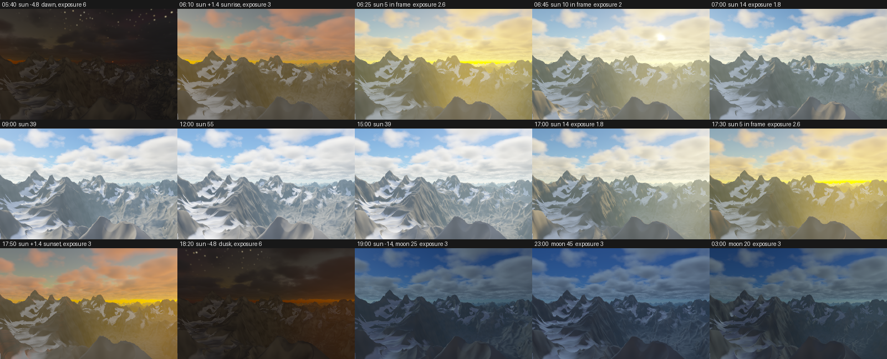
docs/prs/22-sky-model/sweep.sh): only the sun's elevation and azimuth, a moon after dark, and the exposure change between tiles.Aerial perspective is what makes distance read: far mountains fade toward the colour of the sky behind them. The air here thins with height, density e^(−y/HazeH) with HazeH 45, so a ray looking down into a valley crosses more haze than one grazing the peaks. For exponential air, the total along a straight ray has a closed form (Quilez, better fog), so fc-haze computes it exactly instead of marching:
HazeCol is the sky's own colour just above the horizon in the ray's direction, which is the colour an infinitely long path through this air would reach, so haze toward the sun carries the aerosol's forward glow (the phase term) and goes orange at dusk. The weight w is per channel (HazeChroma): the haze is taken to be the model's Rayleigh air plus enough neutral aerosol to reach HazeDist in green, so blue fades a little sooner and red a little later (15% and 4% at HazeDist 650; a haze that thick is mostly aerosol, and a first version that used the clear air's full ratio turned the forest's foreground teal). HazeChroma 0 fades all three alike, as the first version did; 2 or 3 exaggerates the blue distance.
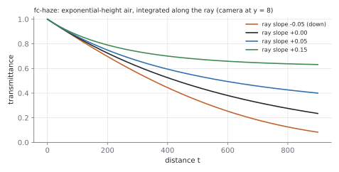
HazeDist 520).Tone. Light values add up past 1 where the sun hits snow. fc-tone compresses them into 0–1 and encodes them for the screen; ToneCurve picks how. /Exp, the original, compresses each channel with an exposure curve, 1 − e^(−Exposure·c) (Exposure 1.6), then gamma-encodes with a plain 2.2 power, close to but not exactly the sRGB curve. It has a shoulder but no toe: the curve is straight at black, so shadows come out light and the picture a little flat.
/ACES (fractal_clouds#24) is a filmic curve: Stephen Hill's fit of the ACES reference rendering and sRGB output transforms. A 3×3 matrix takes the colour into the curve's working space; a rational function (v(v + 0.0246) − 0.00009) / (v(0.9837v + 0.4330) + 0.2381) gives it a toe (shadows sink and gain contrast, keeping their colour) and a long shoulder (snow and cloud tops roll off instead of flattening); a second matrix brings it back, and the exact sRGB transfer function (linear below 0.0031, then a 1/2.4 power) encodes it. Its input is Exposure·c times 1.1, which puts mid-tones (Exposure·c 0.4) where /Exp puts them, so Exposure means the same with either curve. The matrices cross-mix the channels, so a very bright, saturated colour desaturates toward white the way film does, rather than clipping to a harsher hue. Blind pairwise judgment by Codex, in both orders, found it the more pleasing picture on three of the four gallery pieces but no more realistic (the realism verdicts split by position, and mountains read as a tie), so /Exp stays the default and /ACES is opt-in (docs/prs/24-filmic-tone/).
Grade. lib/fc_grade.ps grades the picture in linear light, just before the tone curve, through the fc-landscape-grade hook: white balance (gains on red, a little on green, and on blue), split toning (shadows multiplied toward one tint and highlights toward another, blended by luminance about a pivot, each tint normalised to luminance 1 so only its hue counts), saturation about the Rec. 709 luminance, a vignette that follows the ray's angle off the view axis as cos⁴ (so it is the same at any resolution or crop), and a veil of added light that lifts the blacks the way lens flare does. Grading before the curve keeps it photographic: the toe and shoulder act on the graded light, so a lift stays soft and a warm shift doesn't clip. The library loads only when a grade setting is set, so ungraded pieces are untouched. Presets (/Warm, /Cool, /Muted, /Matte, /SplitTone, /CoolMuted, /Vignette) set it in one word.
What went wrong: the first renders wrote linear values straight to 8 bits. Shadows crushed to black and lit faces looked metallic. Converting the palette to linear, lighting in linear and encoding once at the end fixed both.
10. Clouds
Clouds are a density field between CloudLo and CloudHi, marched front to back. The model borrows from the cloud system in Schneider and Vos's Horizon Zero Dawn talk (SIGGRAPH 2015), cut down to what an interpreter can afford.
Density (fc-density) is 3D value-noise fBm, squashed vertically by 1.6, minus a Threshold, so only the high parts become cloud. A height profile, min(6h, 1)·min(1.6(1 − h), 1), rounds the bases and tops by raising the threshold near them. A 2D coverage map (CoverAmp, CoverScale) moves the threshold over large areas, so clouds gather into groups with clear sky between.
The march (fc-clouds) finds where the ray enters and leaves the layer, stops early at the ground hit, and steps (t1 − t0)/CloudSteps + 0.012·t: steps grow with distance, which removed horizon grain. The first step is jittered by a fraction of a step so step boundaries don't show as bands. The fraction is read from a 64 × 64 blue-noise tile (void and cluster, Ulichney 1993) at the pixel, not drawn at random: neighbouring pixels get offsets spread evenly over 0..1, so the leftover error is a fine, even dither instead of clumped grain, and a pixel gets the same jitter in a whole frame, a crop or a render band (so, with the depth keys PixSeed gives a band's edges, #19, bands stitch into exactly the whole-frame picture; nothing in a pixel draws on the random stream any more). Each further layer steps the value on by 0.755, and each extra antialiasing sample of the pixel by the golden ratio, so they don't repeat it. Each sample's opacity is Beer–Lambert, 1 − e^(−Sigma·density·step). With CloudDense above 0, a step whose optical depth Sigma·density·step would exceed it is shortened (to half at most), so no single sample takes much of the light. It is off by default: on the storm it cut the per-pixel jitter error by a quarter, but the blurred error (what reads as grain) not at all, for 7–10% more time; the blue-noise jitter had already done that work. The layer's noise has an exact early out: the fBm stops adding octaves once even full values in the rest couldn't lift it to the density threshold (with a small margin, so no result changes), which in clear air is usually after the first one or two; it makes cloud crops a few percent faster. Light is accumulated front to back, weighted by the transmittance so far, and the march stops once less than 1% gets through.
Lighting (fc-cloud-light) at each sample:
- Sun: two density probes toward the sun (at 3.2 and 6.4 units, three octaves) give the optical depth to the sun and its transmittance
e^(−depth). - Edges (
0.4 + 0.6·(1 − e^(−2.5·Sigma·density))): thin edges scatter less light toward the eye than the body, the "powder" effect, which outlines cumulus. - Phase: forward scattering, the bright silver lining toward the sun, from a Henyey–Greenstein phase function with g = 0.45, scaled by 0.25 and lifted by 0.55 so the side away from the sun doesn't go dark.
- Multiple scattering:
0.45·e^(−0.25·depth), a stand-in for light bounced many times inside the cloud. It keeps thick interiors from going flat grey. - Ambient sky: blended from
AmbBottoAmbTopby height in the layer.
Each sample is hazed by its own distance.
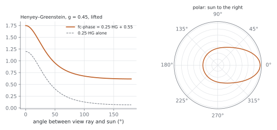
fc-phase: Henyey–Greenstein (1941) with g = 0.45, as used. Strongly forward, but never below 0.55.Layers and types
The sky can hold several layers (CloudLayers, issue #14): a list of presets, [/Cumulus /Altocumulus /Cirrus], or dicts that start from a preset and override keys. Each layer is the same model with its own band, height profile, noise kind and scale, threshold, coverage, extinction, step count and ambient colours, plus three things the single layer didn't have:
- Wind and shear. Before the noise is sampled, the point is turned so x runs along
Wind, and shifted along it byShearworld units per unit of height, so the pattern leans with height.Stretchthen scales the three noise coordinates separately. Cirrus uses 0.1 along the wind, so one noise cell becomes a streak ten times longer than it is wide. (Shear moves a streak along its own length, so cirrus doesn't use it; it is there for leaning towers.) - Billow noise.
/Noise /Billowfolds each octave of value noise,|2n − 1|, before summing: rounded lumps meeting in creases, the cauliflower of a cumulus top. The/Cumuluspreset uses it. Folded fBm sits lower and spreads wider than plain fBm (mean 0.30 and standard deviation 0.13, against 0.50 and 0.11, measured), so the preset's gain (12) is the gallery layer's scaled by the ratio of the deviations, and its threshold the gallery layer's moved by the same number of deviations (0.38), then raised to 0.41 by eye: the folded noise's long upper tail gave more cover./Value, the smooth fBm, is the base and what the gallery pieces use. - Rain. A layer with
Rainabove 0 is marched down to that far below its base. There the density is the cloud's a quarter of the way up the band, scaled byRainDensand fading linearly to the ground, so the overcast's thick parts hang vertical shafts beneath them.
The march (fc-clouds) binds one layer's parameters to plain names, marches the ray through that band, and goes on to the next, carrying the transmittance. Each layer's parameters are gathered into a dict of those names once, when the list is compiled, so binding a layer is one def per name; a rising ray takes the layers from the lowest up, a falling one from the highest down, and the whole thing stops once under 1% of the light would get through. Nothing is sorted per ray, so the bands (rain included) must not overlap; compiling checks this. In a layer list each sample's opacity fades linearly over the last 30% of TMax, so a high layer that reaches the edge of the march thins into the sky instead of stopping in a straight line. Each layer's sun probes look only inside that layer: a cumulus under a thin cirrus is not shaded by it, which is cheap and, for thin upper layers, right enough. With CloudLayers unset, the old single layer is bound once from the Cloud* settings and marched exactly as before; the gallery renders are pixel-identical.
For the ground and for sun shafts, fc-cloud-shadow gives the sunlight reaching a point through every layer above it from one density probe per layer (Probes of them since #15), the estimate the terrain's cloud shadows already used for the single layer. With a layer list the terrain shades the ground with it (the single layer keeps its old probe). Only the direct sun is shaded: under a stratus sheet about 90% of the sunlight is blocked, but the terrain's sky ambient is unchanged, so an overcast darkens the ground only a few percent. CloudSkyDim (issue #15, off by default) dims the ambient too: see the storm below.
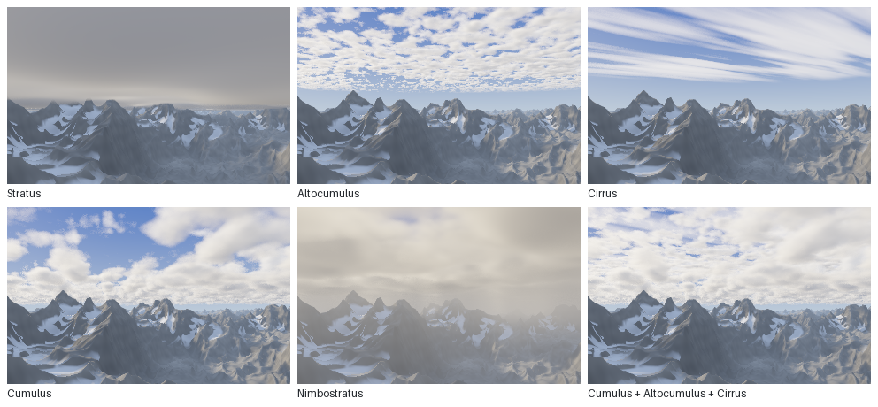
docs/techniques/cloud_types.ps, 320×200 each): stratus, altocumulus, cirrus, cumulus, nimbostratus, and a layered sky of cumulus, altocumulus and cirrus.A storm: a cloud placed like a mountain
A cumulonimbus (issue #15, lib/fc_storm.ps) is one object at one place, not a sheet, so it is a cloud layer whose band runs from its base to the top of its dome and whose Shape carves the storm out of it. The shape is a signed field that needs no noise: 1 on the axis, 0 on the outline, negative outside. It is the largest of three parts: a tower, a circle at each height that leans downwind and flares a little toward the top; an anvil above AnvilBot whose outline widens quickly with height (as h0.35, so its edge is blunt rather than a sliver the noise breaks into loose puffs), reaches far downwind and only a third as far upwind, and is cut flat at StormTop; and an overshooting dome, a sphere centred a little above the tower top so it shows over the anvil's near edge. The layer adds the billow noise to the field times StormEdge, so the noise breaks the outline into turrets but can't empty the inside or spill far out of it. The anvil's field is steeper (AnvilEdge), so its edges are smoother than the tower's. The flat base is free: it is the bottom of the band.
Three changes to the layer machinery make this affordable and dark enough:
- Bounds. A layer can carry an x–z box. Outside it the density is 0 without any noise, and each ray clips its march to the box with a slab test, so its
Stepsare spent on the storm and the rest of the sky, which would otherwise march the whole band, 130 units tall, costs nothing.fc-storm-boundssizes the box from the envelope with room for the noise to push it out. - Shape first. The
Shapeis now called before the noise; a value of −1 or less means nothing is there and the noise is skipped. Most of the box is empty air, so most samples cost a little arithmetic. - Its own shadow. The two sun probes see only 18 units into the cloud, which leaves a 100-unit tower lit right through. The layer's
LightDepthprocedure adds optical depth from five longer steps through the noise-free envelope toward the sun (StormShadeper unit of envelope). The side away from the sun, the underside of the anvil and the base go dark; the multiple-scattering term, which falls with the same depth, takes the glow out of the interior.
Rain is the layer's ordinary Rain, the cloud a quarter of the way up the tower hung below the base, multiplied by the layer's RainMask: the envelope just above the base through a smoothstep, so the rain thins toward the edge of the tower's foot instead of ending in a wall, times broad shafts of 2-D noise streaked by a finer one. Rain with a mask is lit with the bottom ambient, as the base is, so it reads as dark streaks rather than a pale veil. (RainShafts, a plain shaft noise without the rest, is there for other layers.) Virga come from the shape: under the anvil, down to VirgaLen below it, the anvil's outline one VirgaLen higher is multiplied by a 2-D streak noise, so thin wisps hang only under the anvil and fade downward. The ground under the storm loses the sun through fc-cloud-shadow with three probes up the band (one probe at mid-height would miss the anvil), and, with CloudSkyDim, the sky too: fc-cloud-sky probes straight up the same way, and the terrain scales its sky light and warm bounce by the light that gets through. What is left is the blue part of the sky light, so the shade is darker and cooler.
From the gallery piece's viewpoint the ground under the storm is mostly behind the front ridge, and with the sun behind the storm the range is in its own shade anyway, so the cloud shadow alone hardly shows. What makes the storm read as coming is the air under it: StormGloom treats the column of air below the base as shaded haze. Each ray's length inside a vertical cylinder around the storm, below the base and short of what it hits, is weighted by depth below the base (integrated in closed form, so the top of the column has no edge) and by how close the ray passes to the axis, and fades the pixel toward a dark grey. The result is a dark wall along the horizon under the base, with the rain shafts in it.
Cost, measured with Profile (macOS, one core): the 320×200 preview takes 143 s, of which the clouds are 15 s (0.21 ms per pixel; the gloom 0.1 s), less than the gallery cumulus costs per pixel (0.62 ms on the same crop of Mountains), not the 2–4× more the issue expected. Most samples in the band are empty air, which the shape-first skip makes nearly free; the box clip saves another 15% on a crop of the storm. The terrain dominates the frame.
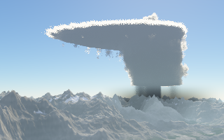
gallery/storm.ps, 320×200).Not done: lightning (an emissive branching path that also lights the cloud from inside), and a shelf cloud along the gust front. Layers still composite by height, so the storm's band can't share heights with other clouds.
Why marching rather than splatting
The first spike (docs/spikes/1-cloud-timing.md) compared ray marching with "splatting": drawing clouds as thousands of translucent discs, back to front, with pscat's setalpha. At equal quality both took about 22 s at 320×200. But splats showed purple and cyan fringes, and a test with exactly the same discs blended in floating point showed none. pscat's alpha compositing loses precision over many faint layers (logged as pscat issue 5). A ray marcher composites in its own variables and writes each pixel once, so it can't hit that.
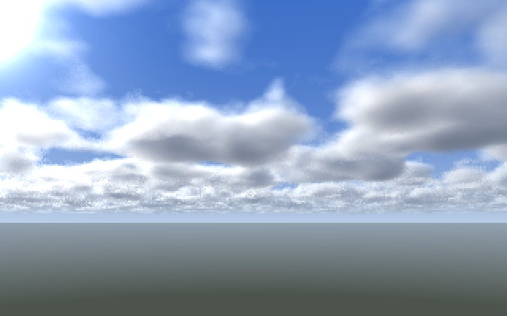
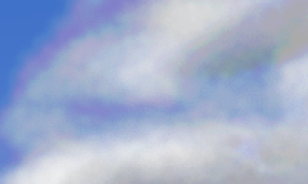
11. The forest
Trees were the hardest part, because they're small, numerous and full of holes. A spruce crown is many metres of shadowed branches that a pixel might average, or one branch tip that catches the sun. lib/fc_trees.ps treats the forest as one more heightfield standing on the ground. It answers three questions: where trees grow, what shape each crown has, and how to march and shade them cheaply.
Where trees grow
fc-forest-bake evaluates a density between 0 and 1, and a height scale, on a 384² map covering 700 units centred 300 ahead of the camera. The rules (fc-forest-dens) follow how real treelines behave (Körner, Alpine Treelines):
- A treeline at height
FsLine20, wandering ±5 units with noise. It climbs on ribs and drops in gullies: the ground's curvature, measured on the map over three texels, shifts it by up toFsCurve3. Avalanches and streams keep trees out of gullies. - Not on steep rock: density fades out as the slope steepens from about 37° to 46°.
- Clearings and groves: one noise cuts clearings and thins stands; a finer one, with features about 8 units across, makes groves within them.
- Meadows on the flattest, lowest valley floor.
- Stunted trees: a sparse scatter above the line. Trees near the line are shorter.
Which trees, and where exactly
The ground is divided into cells FsCell 1.3 units wide, with one candidate tree per cell. A hash of the cell's coordinates gives the tree its random numbers. It's kept if one of them is under the density, and the others jitter its centre by up to ±0.45 cell and choose its height. A quarter of the trees are young or suppressed at about half height; the rest are FsHMin 1.6 to FsHMax 3.2 units (16–32 m). Each crown's radius is about 0.28 × its height.
The radius is capped at 0.55 cell, and that cap is what makes the search cheap. A point in cell i lies before the edge at i + 1. A tree two cells over has its centre past i + 2.05, and its crown reaches back no further than i + 1.5. So only the 3×3 cells around a point can hold a crown that covers it: nine hash lookups, no matter how big the forest.
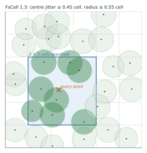
The crown
A crown is a heightfield too: above each point near the trunk, how high is the tree? fc-tree-prof builds a spruce from FsTiers 9 whorls of branches. Whorl k hangs from the trunk at k/9 of the tree's height, reaches out to the cone envelope y = 1 − u, and droops toward its tip by FsDroop·(u/reach)^2.5, most at the tips, like real spruce branches. Seen from above, the surface at distance u from the trunk belongs to the topmost whorl that reaches that far. Where that whorl's drooping tip ends, the next whorl down takes over, and since its branch hasn't drooped as far there, the surface steps slightly up (see the figure). Each whorl's reach is also shortened by up to 15% depending on direction around the trunk, and by up to 20% from whorl to whorl, so the outline is ragged, not a perfect cone.
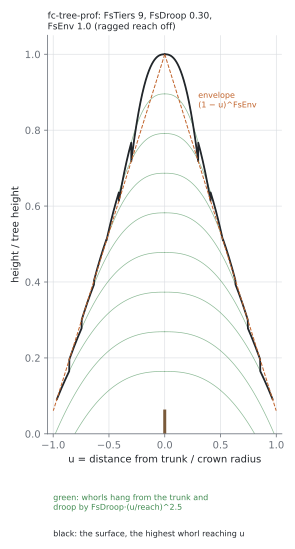
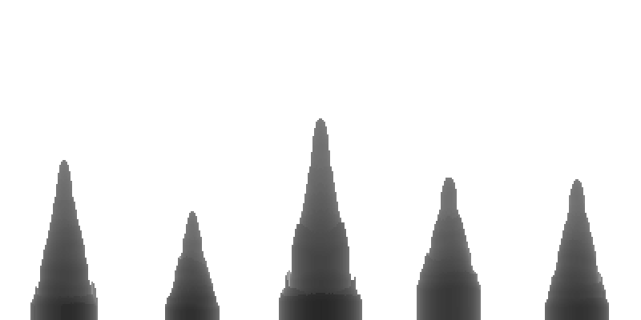
spikes/tree_side.ps: five crowns from the library, orthographic side view, darker toward the viewer. This spike was used to fix proportions that only looked like slivers in the forest.Level of detail
Whorls are wasted, and alias, once a crown is a few pixels wide. Two weights fade them out. Branch detail (raggedness and whorl steps) fades as the crown's radius falls from 12 to 4 pixels, leaving the smooth envelope. Below about 2 pixels, fc-forest-w fades the separate crowns into a canopy slab: a smooth layer at the forest's mean height, coloured by the ground shader as a mottled texture no finer than three pixels.
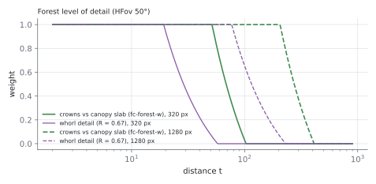
Marching the forest
fc-forest-hit replaces the terrain march. Above the tallest possible tree it takes the slope-bounded steps of section 6. Inside the tree band it steps by the larger of two safe distances: 15% of the height above the crowns below, or the horizontal distance to the nearest crown (FcHc, which the 3×3 search provides). That's the step that lets a ray slip between trunks. On overshooting, six bisections find the surface, and a final check records whether a crown or the ground was hit (FsMat).
Shading the crowns
- Normals from the envelope. The stepped whorl surface is useless for normals (see below), so the normal comes from the smooth cone, tilted by noise laid out around the trunk and up the whorls, like foliage clumps along the branches.
- Whorl light and gaps. Each whorl's top catches light and its underside doesn't. Noise opens dark gaps between branch clumps into the crown's interior. Both fade with the level of detail.
- Two-tone needles. Needles are warm olive (
FsAlb) where the sun reaches them and blue-green (FsShade) where only the sky does, which is how spruce reads in photographs. Each tree gets its own tint and brightness. - Light through the canopy. The sun term is wrapped diffuse,
(N·L + 0.25)/1.25, since needles scatter light around the crown. It's multiplied by the terrain shadow and byfc-tree-sunvis: six probes toward the sun, up to 2.9 units out, each one inside another crown cutting the light to 30%. Sky light falls off low in the crown and in dense stands.
Species, trunks and dead trees
Issue #25 gave the forest trunks, a forest edge and more than one kind of tree. The tree is still a heightfield, but a crown no longer has to stand on the ground: each tree has a crown base, and its solid runs from the base surface up to the top surface, with a thin vertical cylinder (the trunk) from the ground to the base. The base is b·H at the trunk, drooping outward as b·H − ½·droop·u²·H like the lowest whorl's tips; the top is the old profile squeezed into the part of the tree above the base. The fraction b comes from the species' base (in the open) and baseDense (in a closed stand), blended by the local forest density, varied per tree, halved for suppressed trees. So trees at a stand's edge, and isolated ones, keep their branches to the ground (more light there), while interior trees have self-pruned and stand on bare trunks. The base is also scaled by the whorl level-of-detail weight, so it's zero wherever a crown is under four pixels wide: at that size the whole thing is a heightfield again and costs nothing extra.
Marching under crowns. The 3×3 search now returns, besides the highest top, the signed vertical distance from the sample to the nearest tree solid (FcIn: negative inside). A sample below a crown's top but above its base is in the gap, and the march steps by 15% of the clearance to the base above or half the gap to the ground, whichever is smaller, as it does above the crowns. Bisection uses the same signed function, so it stops on the underside of a crown, on the ground under it, or on a trunk. A trunk is too thin to sample: the search also intersects the ray with every candidate trunk's cylinder (a quadratic in the horizontal plane), and if the nearest entry lies within the next step, that entry is the hit, exactly. A ground hit under a lifted crown is told from a crown hit by comparing the height over the ground with the clearance to the solid above.
Skipping cells that can't matter (#17). Most of the nine cells in a search hold a tree that's too far away to affect the result. Each cell now works out its jittered centre first, then gives up when nothing it could write would change. That's the case when the point is at least the widest radius anything can have away from the centre (FcRmax: a crown's 0.55-cell cap, a log's 0.6 or the widest snag), and also at least that plus the nearest clearance found so far (FcHc). In the march there's a further check that no trunk can be ahead. A trunk is ruled out when the ray is moving away from the cell's axis, when it misses the widest possible trunk (FcRtMax), or when no tree there could be wide enough on screen to have a trunk (FcLmax). Shadow probes skip the crown search when they're above the tallest possible tree (FcTopMax, from FsHMax, the table's largest hmul, any lifted base over 1 that a custom table allows, and the map's height scale). All of these are conservative bounds worked out at load, so the pictures are pixel-identical; the near and mid forest crops render about 16% faster. The rest of the cost is the terrain height under every march step (about 100 fc-height calls a pixel, two thirds of the time), which an exact change can't reduce. Larger cuts, such as a tighter step from the crown envelope, fewer bisections or coarser distant shadow probes, would move the hits and change pixels, so they weren't made.
Skirts without speckle. Bisection used to return the middle of its last bracket. On a crown's steep sides (the end of each whorl, and the skirt at the foot, which is nearly vertical) that middle often lies just outside the crown, where the classification finds no crown and shades the point as ground: a dither of floor-coloured pixels in the lower crowns of every close tree. With FsTrunks on, the classification asks at the bracket's inside end instead (at most 1/64 of a step inside the surface), and a tree hit is moved there; a ground hit keeps the middle, so the terrain renders as before.
Needle sprays. Up close (where trunks show) the light on a crown is also broken by a finer noise, sprays of needles with dark gaps between them. Its frequency is set from the pixel footprint, 0.5 / FcPx, so the sprays are about two pixels across at any distance and fade out with the whorl detail: texture, not aliasing.
Species. FsSpecies is a table of dicts (spruce, fir, pine, larch, broadleaf), each with its profile (env droop tiers: a straight spruce cone, a fir's narrow spire, a pine's rounded dome of five whorls with a high base, a larch's slim spire, a broadleaf's low dome; rag and lobes make the pine's and broadleaf's outlines lumpier than a spruce's, near the camera), its crown radius and height, its crown bases, trunk radius, colours (needles in sun and shade, bark, and an autumn colour for the deciduous ones, mixed in by FsAutumn) and an altitude band relative to the treeline (broadleaves only well below it). FsMix gives the weights; a tree draws its species from a seventh hash table against those weights, faded by the altitude at its cell's centre (so one tree is one species all over), from a map baked with the density. The default mix is spruce only, so the gallery pieces keep their character; a new species is a new dict and a weight.
Experimental: the pine and broadleaf dicts, and so any FsMix that uses them, lost blind pairwise against the pure spruce stand under the analytic sky (#48): Codex found their crowns blocky and their bare trunks pole-like. A spruce–fir–larch mix tied. Their look continues in #53.
Dead trees. A ninth hash table makes a few trees (FsSnag, FsFallen) into snags, a bare trunk broken off a quarter to two thirds of the way up and tapering to its broken top (the cylinder test is repeated once with the radius at the height the ray first met it), or logs, a half-cylinder lying from where the tree stood in a hashed direction. Both are ordinary candidates in the cell search, so the march and the shadows know about them, and where trunks are below the level of detail they stand as ordinary live crowns, so the distant canopy keeps its density. Trunks and logs are shaded as wood: bark colour with furrows from noise, a radial (or half-cylinder) normal, the sun past the crowns and the terrain's shadow, and only the little sky a stand lets in. The underside of a lifted crown gets the shade colour, the ground's bounce and whatever sun comes in low from the side. The sun-visibility probes were changed to test a probe against the tree solid rather than against the crown top, so low sun now reaches under lifted crowns at a stand's edge, lighting the trunks and the floor there.
What went wrong (several times):
- Grey speckle in the crowns. A false-colour render of the materials showed the cause: it was the ground seen through gaps, lit as bare rock. The fix was a dark needle-litter floor under trees (the ground shader's material hook darkens it, adds the crowns' shadows and hides most of the sky).
- Crowns poking through the cell search. A raggedness factor let crowns grow past their radius, which broke the 3×3 argument above. It's now capped.
- Inverted facets. An early tier formula made the surface rise outward. Rendering normals as colours found it.
- Noise from normals. Normals by finite differences across the whorl steps flipped from pixel to pixel. The lesson: don't difference a discontinuous surface. Take normals from a smooth envelope and put the detail in the shading.
The forest from round to round
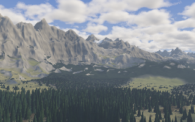
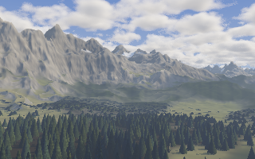
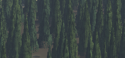
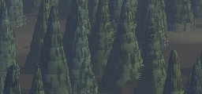
12. Water
lib/fc_water.ps is one water surface for every piece: a level plane (WaterY, or WaterRise above the ground under the camera), the lakes of a terrain map (MapWater, each plane cut to its polygon) and rivers (Rivers). It wraps the landscape's hit and surface hooks, so the dry scene underneath doesn't know it is there, and it is the base #38's sea builds on: the normal (fc-water-normal) and the water's own colour (fc-water-colour) are hooks of their own.
Where the water is
The hit hook marches the dry scene first, then looks for water in front of it. A plane at level L is hit at t = (L − CamY) / My if that comes before the ground (or the ground was missed). A river surface is not a plane, so it is found from behind: if the ground the ray hit lies below the river's level there, the ray went into the water on the way, so it steps back half a texel at a time until it is above the level again and bisects to the crossing. Both leave the ground's distance (AqBedT) for the shallows.
Rivers from the erosion map
The erosion droplets themselves are poor rivers: they die after 48 steps and in the first pit, so the water they carry adds up to short dashes, not a network. Instead, when rivers are on, the bake also works out each texel's catchment on the finished map. A priority flood (Barnes, Lehman and Mulla 2014) takes texels from a binary heap lowest first, starting from the map's edge; each newly reached neighbour drains to the texel that reached it and is raised, if need be, to that texel's height plus a hair, which fills every pit to its spill point and gives flats a direction toward their outlet. Read in reverse, the visiting order runs downstream last, so one pass adds every texel's count to the one it drains to. At ErN 512 that is about 4 s, against about 25 s for the erosion itself.
Channels start where the catchment passes RiverLo (10000 square units, 1 km²) and are full size from RiverHi, on a log scale. Every channel texel presses a rounded groove, 1 − (d/r)², into the erosion map, with its width and depth growing with the square root of that strength, so a young stream is a narrow nick and a river a broad bed; grooves combine by taking the deepest. Because the groove goes into the erosion map, the terrain's own height, normals, shadows and the forest all see it, and nothing in fc_terrain.ps changes. The water level is then flat across each channel: the lowest bed (at full detail) within a texel, plus RiverFill of the deepest groove there. It is carried two texels out past the channel, so the bilinear lookup stays smooth over the banks, which stand above it.
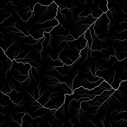
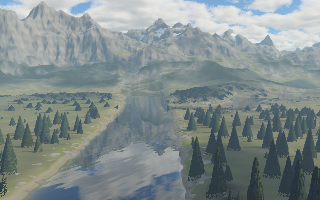
docs/prs/28-water/river_valley.ps: the valley of alpine forest seen from a river bank (18 min at 320×200 on one core, on a loaded machine; the water is 11% of the render).The surface
Ripples are two octaves of noise stretched across the wind, used as a slope, so the normal comes from the noise's analytic gradient rather than a tilt of the mirror. Each octave fades out as its wavelength approaches three pixels, measured along the view, where the water is foreshortened by 1/|dy|. The slope an octave loses doesn't vanish: it tilts the mean normal toward the camera, because at grazing angles the facets that face the viewer are the ones seen, and they reflect higher sky. That is why far rough water reads lighter than calm water, and it makes wind streaks (bands of more and less roughness along the wind, from a long noise) visible at any distance.
Under the surface, the bed shows through shallow water: it is shaded as dry ground and faded by the path length through the water, so the waterline is a gradient rather than a hard edge, and the antialiasing sees water as 20% farther than it is, so it treats the shoreline as an edge. Above it, the shore is a material: wet ground (darker and smoother) up to ShoreWet above the waterline, a lighter band of sand and pebbles at the edge, and stones in the band and the shallows, all moved a little by noise. Height alone would spread the stones over a flat meadow that sits just above the water, so they and the band also fade with an estimate of the distance from the water across the ground (height over slope, ShoreReach). The bed is shaded only where it shows, (1 − F)·T above 2%, and a ripple octave's noise is skipped once it has faded to 5%.
The reflection, exactly
Every renderer ray starts above the origin ((0, CamY, 0)), so a reflected ray is marched from a virtual camera: the point straight above the origin on the line through the water point with the view ray's heading and the reflected ray's slope. Started at the water point (MarchT0), it marches and shades the dry scene exactly. Its haze is counted from the water point, and so is the haze on the clouds it passes: fc-clouds calls fc-haze by name, so it is swapped for one that starts at the water while they are marched. The first lake (gallery/evening_lake.ps, #11) mirrored the camera below the water and hazed the reflected clouds from there, where the exponential haze is densest, so its reflected clouds came out too hazy.
Two approximations remain. A ripple's sideways tilt is dropped from the reflected ray (only its slope is kept), since a ray with another heading wouldn't pass above the origin; the sky, which needs no march, is looked up along the full reflected direction. And the cloud march can't be told to start at the water, so it also crosses the stretch from the virtual camera up to the water point; that stretch lies below the water, so this only matters for water above a cloud base.
The sea
lib/fc_ocean.ps (Ocean, #38) turns the plane into a sea through the same hooks. Everything keys on one number per water pixel: the depth, sea level minus the ground's height straight under the surface point (SeaDepthOct octaves). That is not the depth the lake's hook is given, which is measured where the view ray meets the bed and, at grazing angles, lies far behind the surface point.
Waves. The swell is four directional sine waves around the wind (wavelengths 1, 0.63, 0.41 and 0.27 of SwellLen, headings spread by SwellSpread), summed as slopes; the chop on top is the lake's ripples, called through the replaced hook. Each component fades out as its wavelength nears three pixels along the view, and the slope it loses tilts the normal toward the camera, the same rule as the ripples, so detail falls off with distance like the terrain's octaves and the far sea doesn't sparkle. In water shallower than 3 SurfDepth the swell steepens (SwellShoal). The waves change the normal only. At the issue's views (a camera 1–4 units above the sea) a swell of slope 0.1 and wavelength 12 stands 0.19 units high: near the camera the view ray falls more steeply than any wave face, so no crest can hide the water behind it; from about 40 units out it could, but a wavelength there is ten pixels and a crest would move the trough behind it by under two, which the toward-camera tilt already stands in for. A height hook in the hit would cost a second march for every water pixel, so it was left out.
Colour. The water's own colour runs from SeaShallow (turquoise) to SeaDeep (dark blue-green) as exp(−depth / SeaDepth), lit by the sky and, more over a shallow bright bed, the sun. The bed itself still shows through by WaterClear, and it is sand: a material hook paints SandCol on gentle ground below SandHeight above the water. Since the bed stops showing after a few WaterClear of path, the march under the sea stops at six of them past the surface instead of running out to TMax.
Foam. Three sources, each a cover 0..1, the largest wins: crests, where the swell's weighted height passes FoamCrest (when components line up); breakers, in water shallower than SurfDepth; and a swash line at the waterline. The breaker lines must follow the beach, not the open swell, so their phase is the distance to the waterline, estimated as depth over the bed's slope (four more height samples), divided by SurfSpacing, plus a slow wander. Each cycle is a sawtooth, a sharp front on the shoreward side and a trail decaying out to sea over SurfTrail of the spacing: the foam a wave leaves behind once it has broken. A cover f becomes lace by thresholding noise stretched along the wind at 1 − f, so dense foam is solid and thin foam breaks into streaks; under three pixels the lace fades to its mean. Foam is lit by the sun on the wave normal (with terrain and cloud shadow) and by the sky.
Glitter and wet sand. The reflected ray keeps only the normal's slope (above), so the sun would never glint off a wave that tilts sideways; glitter is added as a Beckmann highlight on the full normal instead. Its width grows with the slope the waves lose to distance, so near the camera single facets catch the sun and far out they merge into a smooth path. Ground less than WetSand above the water is wet sand: it is shaded as ground, then mixed with a reflection of the sky and clouds off a level film (no ground march: cheaper, and it can't meet the sand it starts from), by Fresnel and WetMirror, which is the bright band a wave leaves as it pulls back. The band is measured on the same coarse height as the depth, so the swash meets it, and its edge widens to the height a pixel spans. The glitter has Smith shadowing-masking: without it the 1/(4 n·v) term grows sevenfold toward the horizon. Only the sea plane gets any of this: rivers and lakes above it keep the lake's surface.
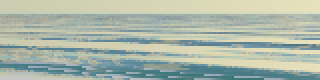
spikes/ocean_shore.ps -D View=2, shown at 2×: the swell and chop fade into a smooth, lighter far sea with no sparkle.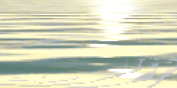
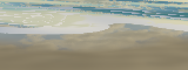
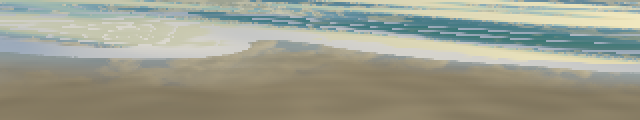
13. Writing the image
fc-render (lib/fc_render.ps) sizes the image from the page and the requested DPI. matrix defaultmatrix reveals device pixels per point, so --dpi 144 doubles the detail without changing the program. It then calls colorimage with a procedure that computes and returns one row of RGB bytes per call. Rows are produced top first, so a seeded random sequence gives the same picture every time.
Antialiasing where it matters. Most of a landscape is smooth; the jaggies are at depth edges, a ridge against the sky or a crown against the ground behind it. Each pixel records its hit distance (FcKey, −1 for sky). If that differs by more than 8% from the pixel to its left or the one above, or one is sky and the other isn't, the pixel gets four extra samples in a rotated-grid pattern and the five are averaged. In the 1280×800 Mountains, 7,430 pixels needed it.
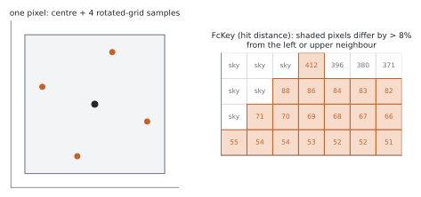
Crops and bands. A 1280×800 render takes half an hour or more, and a 320-pixel preview misjudges fine detail. Two tools help:
/Crop [x0 y0 x1 y1](fractions of the frame from the top left) renders just that rectangle, at the full frame's detail, in minutes.scripts/render_bands.shruns one pscat per horizontal band, each with a crop, on separate cores, then stitches them. pscat is single-threaded, so four bands give about 4×.
Every band repeats the setup (bakes included), so the seeded scene is identical. The bands run with /PixSeed true: before a pixel's first sample, fc-render reseeds the random stream from a hash of the pixel's position (an xorshift round and two multiply-xorshift rounds: rand is a linear congruential generator, and with a linear hash neighbouring pixels' first draws would correlate), and a band starts by computing the depth keys of the row above it, which edge antialiasing compares against. A pixel then depends on nothing rendered before it, so the stitched picture is identical, byte for byte, whatever the cut points.
Balancing the bands. Rows cost very different amounts: a row of clouds and distant massif costs more than a row of near forest, and a sky row with nothing to hit costs little. Hand-picked cuts for the 1280×800 Alpine forest left the slowest band at 25 minutes against 14 for the fastest. render_bands.sh --auto N first renders the whole frame at an eighth of the DPI with /RowTimes true, which prints the usertime after every row, then places the N−1 cuts where the cumulative row time reaches 1/N, 2/N, … of the total (interpolating within a probe row, and snapping each cut to a whole row of the final image). The probe costs about 1/64 of the frame's rows plus one setup. The setup itself (erosion and forest bakes) costs every band the same, so it doesn't move the cuts; it does set a floor on each band's time, which is why there is no point in more bands than cores. N defaults to the core count.
14. Making your own landscape
lib/fc_landscape.ps wraps everything above into a scene a new piece can use with settings and a few lines of PostScript. A piece sets its options, loads that one file, and asks for the page:
%!PS-Adobe-3.0
%%BoundingBox: 0 0 320 200
/Seed where { pop } { /Seed 12 def } ifelse
/TreesOn where { pop } { /TreesOn true def } ifelse
/SunDir where { pop } { /SunDir [ 0.6 0.25 0.5 ] def } ifelse
/SnowLine where { pop } { /SnowLine 30 def } ifelse
(lib/fc_landscape.ps) run
% optional: warm the whole picture a little (linear light, before the tone curve)
/fc-landscape-grade { 3 -1 roll 1.08 mul 3 1 roll } def
320 200 fc-landscape
showpageEach option uses the /Name where { pop } { ... } ifelse form so that scripts/render.sh -D Name=value can override it from the command line.
Settings go before the libraries. Every library sets its defaults with fc-default, which keeps a value that's already defined. A setting made after (lib/fc_landscape.ps) run in the /Name where form is skipped, because the name already exists, and even a plain def misses every value a library worked out when it loaded. That once switched antialiasing off for a 33-minute render. Hooks are different: they are procedures, redefined after loading.
Options the scene itself owns:
| Option | Default | What it does |
|---|---|---|
Seed | 5 | one number seeds everything: noise, erosion, trees, march jitter |
TreesOn | false | load the forest; also turns off the terrain's painted-on forest colour |
Erode | true | bake droplet erosion over the view |
CamLift | 0 | if above 0, camera height as a fraction of the tallest peaks (but at least CamAbove over the ground) |
CamAbove | 6 | otherwise, camera height above the ground beneath it |
CamHeight | null | a number puts the camera at exactly that height |
Every other library's options (camera, sun, sky colours, haze, cloud layer, terrain shape, snow, erosion, forest) are listed in settings.md.
Setup order matters. fc-landscape-setup seeds the 2D noise with Seed, the 3D noise with Seed + 101 and the trees with Seed + 303. It then seeds the random stream with Seed + 202, bakes erosion (whose droplets draw from that stream, so reordering changes every pixel) and then the forest, and finally places the camera.
Hooks. fc-pixel calls four procedures by name, so a piece can replace any of them after loading:
| Hook | Stack | Default |
|---|---|---|
fc-landscape-hit | – → t | −1 | the forest march if trees are on, else the terrain march |
fc-landscape-surface | t → r g b | crown or ground shading (linear light, before haze) |
fc-landscape-sky | dx dy dz → r g b | the sky above the horizon, the horizon haze colour below it |
fc-landscape-grade | r g b → r g b | fc-grade when a grade setting is set, otherwise nothing; the last change before the tone curve |
While a hook runs, Mx My Mz is the pixel's ray. After the surface or sky, LnT is the hit distance and LnR LnG LnB the colour before clouds. A new kind of surface is a hit hook that also tests it and a surface hook that shades it; lib/fc_water.ps adds water this way (section 12). A piece can also write its own fc-pixel from the same parts.
15. How the work was done
- Render, then look. Every change was rendered and the PNG inspected; numbers alone missed most problems.
- Diagnostic spikes beat staring at the final render. Small single-purpose renders in
spikes/settled questions quickly: a top-down height map (where is the camera looking?), ground banded by height and slope (where can trees grow?), materials in false colour (is that speckle ground or crown?), normals as colour (why is it noisy?), one crown from the side (are the proportions right?), call counters (where does the time go?). - Blind pairwise review. Renders were judged by a second model (OpenAI's Codex), shown two images without labels and asked which is more realistic and which more pleasing, in both orders. Its absolute 1–10 scores stopped moving early (3/10 for the mountains, 4/10 for the trees, however much the images improved). A preference that holds in both orders was the useful signal; one that flips with the order means "can't tell", and the human eye decides.
- Test the cheapest explanation first. A critique's "where" is a symptom; its suggested fix is a hypothesis. Rendering with one layer switched off is usually the quickest test.
- Crops before long renders. Exact final settings were checked on small full-detail crops before committing to half an hour of CPU.
- Compare with Ghostscript before blaming the interpreter. pscat problems found along the way are logged in
docs/pscat-issues.md.
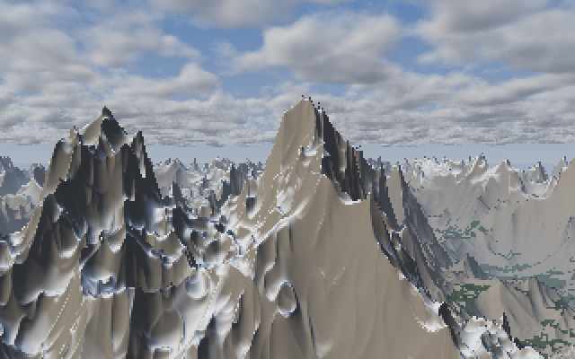
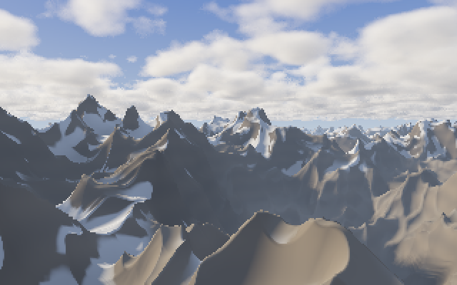
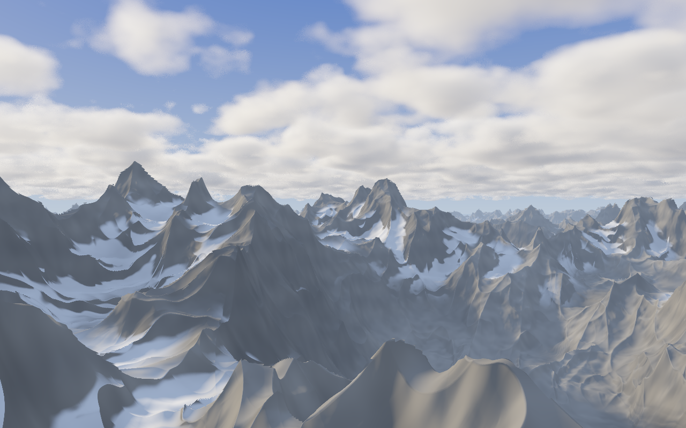
gallery/mountains.ps), 1280×800: erosion, fractured rock and edge antialiasing added. 34 minutes on one core.16. Speed
All on an Apple-silicon Mac with pscat 0.6.2, one thread per process:
| Render | Time |
|---|---|
| clouds only, 320×200 (the spike) | 21.7 s, about 0.34 ms per pixel |
| Mountains, 320×200, 512² erosion map | 140 s (bake 21 s) |
| Mountains, 1280×800, 1024² map, antialiased | 34.2 min |
| Alpine forest, 320×200 | 5.5 min |
| foreground forest crop (close crowns) | 5.1 ms per pixel |
| mid-distance forested slope crop | 6.6 ms per pixel |
| Alpine forest, 1280×800, four bands | 25.5 min wall, 81.6 min CPU |
The near-forest march dominates: crowns are marched in short steps through a three-unit band.
Profiling
Profile (lib/fc_bench.ps) shows where a render's time goes. Set it like any option, before the library loads: scripts/render.sh -D Profile=true -D Res=0.25 gallery/mountains.ps. Setup and render then run with the main procedures (ProfileProcs: heights, the terrain and tree shaders, sky, haze, clouds, the bakes, the landscape hooks) wrapped in a counter and a usertime stopwatch, and a table follows the fc-render line. The table is in the log; render.sh keeps it in renders/<piece>.log. With Profile false (the default) the library isn't even loaded.
How to read it:
- Time is inclusive.
fc-terrain-shade's row containsfc-heightandfc-terrain-shadowinside it, so rows overlap and the percentages add to far more than 100. Subtract a callee's row from its caller's to get the caller's own time. - Calls per pixel is the calls made during
fc-render(the bakes' calls are left out) divided by the pixels rendered. Antialiased pixels cost extra samples, so even one call per ray gives slightly more than 1. - The clock ticks in whole milliseconds (
usertime). Each call adds the difference of two readings, which averages out over many calls but is noise for rows of a few ms or few calls. - The profiler costs time. Each wrapped call pays for a counter, two
usertimereadings and one more procedure call: about 0.8 µs measured on an Apple-silicon Mac (the footer measures it on every run, with an empty procedure). That is a few percent when the wrapped procedures take tens of µs, and most of the time when they don't: wrapping a noise function turns it into a table of overhead. A callee's wrapper cost is also inside its caller's row. - The wrapper leaves the stack and the random stream alone, so a profiled render is the same picture (checked pixel for pixel).
It wraps by redefining the name, so it sees procedures a piece redefines as hooks, provided they're defined when fc-landscape-setup starts or before fc-render runs. A piece that redefines one afterwards calls fc-bench-wrap again. A procedure that was already wrapped and is then redefined gets a fresh wrapper and a fresh row; the old row stays as name#1. (The water's fc-landscape-hit calls the original as fc-water-dry-hit, so the two rows are the hook and the procedure under it; one shared row would count every call twice.) Only procedures defined in userdict are wrapped, and rows that never ran are listed as "never called" instead of shown.
17. Known limits
- Snow is a colour, not geometry: it doesn't fill channels, and the forest map doesn't know where it lies.
- Rock still reads as folded rather than fractured at a distance: the strongest remaining critique of the mountains.
- No trunks. They're hidden in dense spruce but would show at a forest edge seen close.
- Maps cover only part of the world. Erosion covers about the first 1150 units of the view and the forest map 700; beyond them the terrain is purely procedural and the forest a painted texture.
- The coast is a heightfield: no arches, no undercut notches, no overhanging cliffs (#39).
- Faint grain inside clouds from the jittered march steps.
- Cost: close crowns take about 5 ms per pixel. A print-size render is an overnight job unless split across cores.
18. References
- Ken Perlin. "An image synthesizer." SIGGRAPH '85, Computer Graphics 19(3), 1985. doi:10.1145/325165.325247. Lattice noise and solid texture.
- Ken Perlin. "Improving noise." ACM Transactions on Graphics 21(3), 2002. doi:10.1145/566654.566636. Gradient noise and the smoother interpolant.
- David S. Ebert, F. Kenton Musgrave, Darwyn Peachey, Ken Perlin, Steven Worley. Texturing & Modeling: A Procedural Approach, 3rd ed. Morgan Kaufmann, 2003. Musgrave's chapters on fractal terrain introduce the ridged multifractal.
- Inigo Quilez. Articles: fBm; value noise derivatives (and the derivative-damped "eroded" fBm); domain warping; terrain raymarching; soft shadows; better fog (height fog in closed form); outdoors lighting.
- John C. Hart. "Sphere tracing: a geometric method for the antialiased ray tracing of implicit surfaces." The Visual Computer 12, 1996. doi:10.1007/s003710050084. Safe step lengths from a Lipschitz bound.
- Hans Theobald Beyer. "Implementation of a method for hydraulic erosion." Bachelor's thesis, Technische Universität München, 2015. The droplet model in
fc_erode.ps. - Sebastian Lague. Hydraulic-Erosion (code and video, "Coding Adventure: Hydraulic Erosion"), 2019.
- Edwin Catmull, Raphael Rom. "A class of local interpolating splines." In Computer Aided Geometric Design, Academic Press, 1974. doi:10.1016/B978-0-12-079050-0.50020-5.
- L. G. Henyey, J. L. Greenstein. "Diffuse radiation in the Galaxy." The Astrophysical Journal 93, 1941. doi:10.1086/144246. The phase function used for cloud scattering.
- Andrew Schneider, Nathan Vos. "The Real-time Volumetric Cloudscapes of Horizon: Zero Dawn." SIGGRAPH 2015, Advances in Real-Time Rendering in Games. Height profiles, coverage, the powder effect.
- Sébastien Hillaire. "Physically Based Sky, Atmosphere and Cloud Rendering in Frostbite." SIGGRAPH 2016, Physically Based Shading course. Background on participating media and multiple scattering.
- Tomoyuki Nishita, Takao Sirai, Katsumi Tadamura, Eihachiro Nakamae. "Display of the earth taking into account atmospheric scattering." SIGGRAPH '93. doi:10.1145/166117.166140. Single scattering of sunlight in Rayleigh and Mie air over a curved earth, the model behind
fc-sky. - Eric Bruneton, Fabrice Neyret. "Precomputed atmospheric scattering." Computer Graphics Forum 27(4), 2008. doi:10.1111/j.1467-8659.2008.01245.x. The sRGB scattering coefficients and the ozone layer.
- Sébastien Hillaire. "A scalable and production ready sky and atmosphere rendering technique." Computer Graphics Forum 39(4), 2020. doi:10.1111/cgf.14050. Integrating each ray segment's scattering in closed form, and multiple scattering as the mean sky scattered again.
- Fritz Kasten, Andrew T. Young. "Revised optical air mass tables and approximation formula." Applied Optics 28(22), 1989. doi:10.1364/AO.28.004735. The air mass the sun's path is checked against.
- A. J. Preetham, Peter Shirley, Brian Smits. "A practical analytic model for daylight." SIGGRAPH '99. doi:10.1145/311535.311545. The fitted alternative; not used, since its fit misbehaves at low sun and needs CIE conversions, while the scattering integral costs little next to a terrain march.
- Christian Körner. Alpine Treelines: Functional Ecology of the Global High Elevation Tree Limits. Springer, 2012. doi:10.1007/978-3-0348-0396-0.
- Adobe Systems. PostScript Language Reference, 3rd ed. Addison-Wesley, 1999.
colorimagewith procedure data sources,bind, dictionaries. - PSCat Labs. pscat, the PostScript interpreter that renders everything here (version 0.6.2).